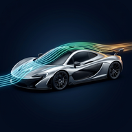

여기에 3D 모델 파일을 드롭하세요
지원 형식: .glb, .gltf, .obj, .stl (자동 정규화 및 실시간 유동 해석)
WebGL2 그래픽 컨텍스트를 복구 중입니다
하드웨어 가속(WebGL2)이 활성화된 최신 브라우저에서 3D 풍동 시뮬레이션을 사용할 수 있습니다.
새로고침

AERO LAB 3D
스포츠카 (3D 모델)
스포츠카
비행기
Ahmed 25°
에어포일
구체
모델 업로드
3/4
측면
정면
상단
후류
❚❚
실행 중
공유
라이트
패널